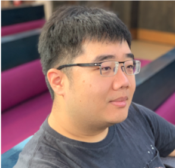

Tse-Hsun (Peter) Chen
Associate Professor, Concordia University Director, Software Performance, Analysis, and Reliability (SPEAR) Lab Academic Associate Member, Mila – Quebec AI Institute
peterc@encs.concordia.ca Google Scholar LinkedIn Twitter
Open to collaboration. I welcome research and industry collaborations; please reach out by email.
Prospective students. I am recruiting PhD and MSc students in LLM agents and software engineering. Former lab members now hold faculty positions in Canada, the US, and India. See how to apply.
I direct the SPEAR lab in the Department of Computer Science and Software Engineering at Concordia, whose software engineering group ranked fifth in the world on CSRankings (2023). We work on making software systems, and the AI agents that increasingly build and operate them, reliable. The lab's main focus today is long-horizon LLM agents.
Our research appears at leading software engineering venues, including ICSE, FSE, ASE, IEEE TSE, and ACM TOSEM, as well as AI venues such as ICML, ACL, and AAAI. Beyond publications, our work has been adopted in practice at companies including BlackBerry, Ericsson, Microsoft, Red Hat, and ERA Environmental. My research is also shaped by industry experience: before joining academia, I worked as a software performance engineer at BlackBerry. Our research contributions have been recognized with the 2024 CS-Can|Info-Can Outstanding Early Career Computer Science Researcher Award.
Research
Reliable long-horizon agents
LLM agents now carry out tasks that span hundreds of steps, but they commit to wrong assumptions too early, lose track of what they have done, and fail in ways that are hard to diagnose. We build agents that check each step against execution evidence, keep an accurate record of their state, learn from past runs, and can explain where a run went wrong.
Applications
- Software engineering tasks such as program repair and CI repair
- Multi-step task automation on mobile devices
- Tracing and attributing failures in agent runs
Representative work: ECLoop and Ledger (2026), Agent-SAMA (AAAI '26), ConRAD (ICML '26), FALAT (2026)
We also continue our long-standing work on the reliability of large production systems.
Logs and AIOps
Log analysis and operations support that are accurate and efficient enough for production, including LLM methods that run on open-source models on premise.
Used for incident diagnosis, Kubernetes operations with Red Hat OpenShift, and anomaly validation in industrial monitoring.
LibreLog (ICSE '25), LLM agents for AIOps(FSE '26 Industry), Explainable anomaly detection(2026)
Software performance
Detecting performance problems the way users experience them, and focusing performance testing on real usage.
Used for catching slowdowns in mobile OS releases, detecting GUI lag, and load testing.
MobileUPReg (ASE '25), GUIWatcher (ICSE-SEIP '25), MLOLET (ASE '24)
Selected publications
Full list on Google Scholar.
- ICML 2026From Patches to Plans: Reasoning Distillation for Repository-Level Program RepairChenglin Li, Yisen Xu, Zehao Wang, Shin Hwei Tan, Tse-Hsun (Peter) Chen
- AAAI 2026Agent-SAMA: State-Aware Mobile AssistantLinqiang Guo, Wei Liu, Yi Wen Heng, Tse-Hsun (Peter) Chen, Yang Wang
- ICSE 2026Order Matters: Enhancing Fault Localization with LLM Agent-Driven Code Navigation and Self-ReflectionMd Nakhla Rafi, Dong Jae Kim, Tse-Hsun (Peter) Chen, Shaowei Wang
- FSE 2026LLM Agents for AIOps in Kubernetes: An Industrial Experience Report with Red Hat OpenShiftArthur Vitui, Tse-Hsun (Peter) Chen
- arXiv 2026Preventing Premature Commitment in Coding Agents with an Evidence-Conditioned Execution LayerYisen Xu, Chenglin Li, Zehao Wang, Jinqiu Yang, Tse-Hsun (Peter) Chen
- arXiv 2026Turning Interaction History into Execution State: A Runtime Layer for Long-Horizon Coding AgentsZehao Wang, Yisen Xu, Chenglin Li, Chao Peng, Bram Adams, Ahmed E. Hassan, Tse-Hsun (Peter) Chen
- ICSE 2025LibreLog: Accurate and Efficient Unsupervised Log Parsing Using Open-Source Large Language ModelsZeyang Ma, Dong Jae Kim, Tse-Hsun (Peter) Chen
- ASE 2025MobileUPReg: Identifying User-Perceived Performance Regressions in Mobile OS VersionsWei Liu, Yi Wen Heng, Feng Lin, Tse-Hsun (Peter) Chen, Ahmed E. Hassan
News
- Oct 2026Joined Mila as an Academic Associate Member.
- 2026Papers accepted at ICML, ACL, AAAI, ICSE, FSE (Industry), and ASE. Congrats to all the students!
- 2026Keynote at PROMISE 2026 in Montreal; serving as General Chair of AIware 2026.
- Nov 2025Received the CS-Can|Info-Can Outstanding Early Career Computer Science Researcher Award.
Lab
Current members
- Postdoc: Md Ahasanuzzaman
- PhD: Victor Guerra Veloso, Zeyang Ma, Yi Wen Heng, Md Nakhla Rafi, Linqiang Guo, S M Farah Al Fahim, Yisen Xu, Chenglin Li, Yifei Zhang
- MSc: Minh Le, Rabeya Khatun Muna, Hassan Jabri
Joining the lab
I am looking for PhD and MSc students interested in LLM agents and software engineering.
Concordia's software engineering group ranked first in Canada, third in North America, and fifth in the world on CSRankings (2023). Through Mila, students in the lab are also connected to Montreal's AI research community. Lab members have received NSERC and FRQNT doctoral scholarships and an ACM SIGSOFT Student Research Competition gold medal.
To apply, please email me your CV, transcripts, and a short note on your research interests.
Alumni
PhD and postdoc
- Zhenhao Li (PhD), York University
- An Ran Chen (PhD), University of Alberta
- Dong Jae Kim (PhD), DePaul University
- Shouvick Mondal (Postdoc), IIT Gandhinagar
- Heng Li (PhD trainee at Queen's), Polytechnique Montréal
- Wei Liu (PhD), Huawei Canada
- Arthur Vitui (PhD), Red Hat
- Zehao Wang (PhD), Queen's University
MSc
- Wasique Islam Shafin 2026
- Feng Lin 2025
- Ehsan Abdollahi 2025
- Lorena Barreto 2024, Slalom Build
- Misheelt (Mia) Munkhjargal 2024
- Md Nakhla Rafi 2023, then PhD
- Tarek Makkouk 2023
- Zeyang Ma 2022, then PhD
- Yi Wen Heng 2022, then PhD
- Steven Locke 2021, Morgan Stanley
- Zehao Wang 2021, then PhD
- Dong Jae Kim 2020, then PhD
- Zi Peng 2020, Tangerine
- Zhenhao Li 2019, then PhD
- An Ran Chen 2019, then PhD
- Sara Seif Afjehei 2019
Background
- Education
- PhD and MSc in Computer Science, Queen's University (advisor: Ahmed E. Hassan); BSc in Computer Science, University of British Columbia
- Industry
- Software Performance Engineer, BlackBerry (2013–2016); Research Consultant, Ericsson AI/ML Upskill Program (2021–2022)
- Recognition
- CS-Can|Info-Can Outstanding Early Career Computer Science Researcher Award (2024), one of three recipients in Canada; Concordia University Research Award (2022); Gina Cody Research Award (2022); Best New Idea and Emerging Results Paper Award, ICSME (2021); Distinguished Reviewer Awards, ICSE 2026 and ASE 2025
- Appointments
- PhD Program Director, Department of Computer Science and Software Engineering, Concordia (2025–present); Academic Associate Member, Mila (2026–present)
- Service
- General Chair, AIware 2026; Reviewer Board, Communications of the ACM; program committees of ICSE, FSE, ASE, NeurIPS, AAAI, ICSME, and MSR; guest editor of special issues in EMSE and JISE
- Teaching
- SOEN 7481 Software Verification and Testing; SOEN 341 Software Process; SOEN 490 Capstone Design Project